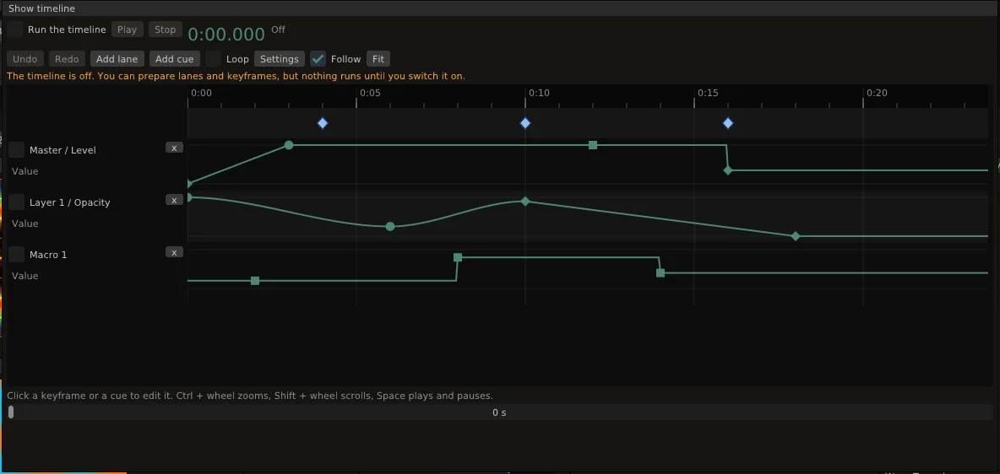

Contents
Getting started
- Welcome to NyrexVJ
- Installing and first start
- The window at a glance
- Your first show in five minutes
Playing visuals
- The clip grid
- Decks and transitions
- Layers and blending
- The Clip window
- Effects
- The Library
- Presets and sessions
- The Master window
Music and motion
Your own content
- Video and image clips
- Your own shaders
- 3D models
- The Clip Creator
- Text, particles and effect chains
- The node effect editor
- Live sources: Spout, NDI and cameras
Output and recording
Live control and shows
- Control: MIDI, OSC and the web page
- Show sync and timecode
- The show timeline
- Stage: DMX, VRSL and VRChat
- Plugins
Reference and help
Manual / Live control and shows
The show timeline
#What it is for
The show timeline is an optional window that automates sliders and switches along a time line. You fade a layer or the master level over a song without touching a slider, or you run a prepared show against a timecode. It shows the cue list of Settings, Sync on the same ruler. It is off by default.
#Turning it on
The menu Timeline has Run the timeline, which turns the timeline on, and Show timeline window, which opens it. Until it is on, nothing is written and no cue is fired by the timeline, but you can open the window and prepare lanes. The menu also has Play or Pause, Stop and Release hand moves.
#Lanes and keyframes
Add a lane for any slider or switch with Add lane. Double click a lane to add a keyframe, drag it to move it in time and value, and right click it to choose Hold, Linear or Smooth. A square handle is a hold, a circle is smooth and a diamond is linear. Shift while dragging keeps the value and Ctrl keeps the time. The tick on a lane mutes it and the X removes it.
Clips, columns and decks are triggers and belong on the cue lane, not on a lane with a curve. The controls of shader clips cannot be automated yet.


#Position, loop and hand moves
The position follows a timecode when there is one, and otherwise runs on the Play, Pause and Stop buttons of the window. Click or drag on the ruler to move the playhead, and Shift and drag on the ruler marks a loop. If you move a controlled slider by hand, the timeline lets go of it until the next keyframe segment or until you release it. Release hand moves gives all controls back to the timeline.
Ctrl and the mouse wheel zoom around the pointer, Shift and the wheel scroll. Fit zooms so that every keyframe and cue is visible. Undo and Redo work for the timeline while it has the focus.
#Saving
Lanes are saved in timeline.json in the data folder, separate from presets and from cues.json. Settings of the window, such as what happens when the timecode is lost, are in its Settings popup. Details, limits and what was not tested are in docs/TIMELINE.md of the project.
Found a mistake or something missing? Tell us on GitHub. The same manual is built into the program, so you have it without internet. Open it with F1 or from the Help menu, then User manual.